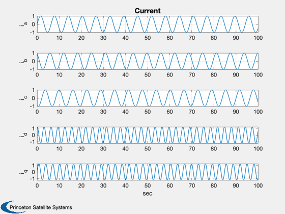

Transformation from the AB frame to DQ frame
A simple example that converts from AB coordinates to DQ coordinates, and plots the time histories of both signals. The AB(C) frame is for a 3 phase generator with phases A, B and C. The DQ frame is the (D)irect (Q)uadrature frame. This is a two dimensional coordinate frame that contains all of the information that is contained in the three phases. Any number of phases can be combined into a DQ frame. Besides having 2 current states instead of n the dynamics no longer contain the electrical rotation angle.
------------------------------------------------------------------------ See also Plot2D, ABToDQ ------------------------------------------------------------------------
Contents
%-------------------------------------------------------------------------- % Copyright (c) 2008 Princeton Satellite Systems, Inc. % All rights reserved. %--------------------------------------------------------------------------
Initialize Data
Choose the frquency in rad/s and generate a time vector.
omega = 1; n = 1000; t = linspace(0,100,n); omegaT = omega*t;
AB Signal
This is the definition of the AB frame signal.
iAB = [sin(omegaT);sin(omegaT+2*pi/3);sin(omegaT+4*pi/3)];
DQ Signal
We now convert to the DQ frame at each time step.
iDQ = zeros(2,n); for k = 1:n iDQ(:,k) = ABToDQ( iAB(:,k), omegaT(k) ); end
Plot
Finally, plot the time histories.
iL = {'i_a' 'i_b' 'i_c' 'i_d' 'i_q'};
Plot2D( t, [iAB;iDQ], 'sec', iL, 'Current')
 %-------------------------------------- % PSS internal file version information %-------------------------------------- % $Id: ac46d6d76a8bd899d402df636cc23a245bfb8b69 $